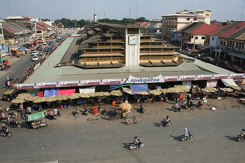
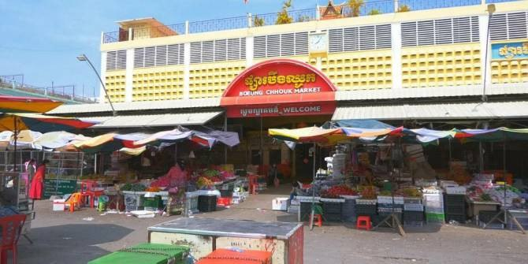

Visiting
 Battambang Khmer: Bătdâmbângis a province of Cambodia in the far northwest of the country. Bordering provinces are Banteay Meanchey to the north, Pursat to the east and south, Siem Reap to the northeast, and Pailin to the west. The northern and southern extremes of the province's western boundaries form part of the international border with Thailand. In addition, Tonlé Sap forms part of the northeastern boundary between Siem Reap and Pursat. Its capital and largest city is Battambang.Battambang Khmer: Bătdâmbângis a province of Cambodia in the far northwest of the country. Bordering provinces are Banteay Meanchey to the north, Pursat to the east and south, Siem Reap to the northeast, and Pailin to the west. The northern and southern extremes of the province's western boundaries form part of the international border with Thailand. In addition, Tonlé Sap forms part of the northeastern boundary between Siem Reap and Pursat. Its capital and largest city is Battambang.
 Locates between two mountains, named Phnom Kul or Phnom Kriem Commune in 35-Kilometer distance from the provincial town. Boeng Kam Pinh Puoy has 1,900-meter width 19-Kilometer length and can load 110,000,00-cubic meter water Phnom Kam Pinh Puoym at Ta Nget village, Ta Ta Nget and The mangager in Battambang his name is